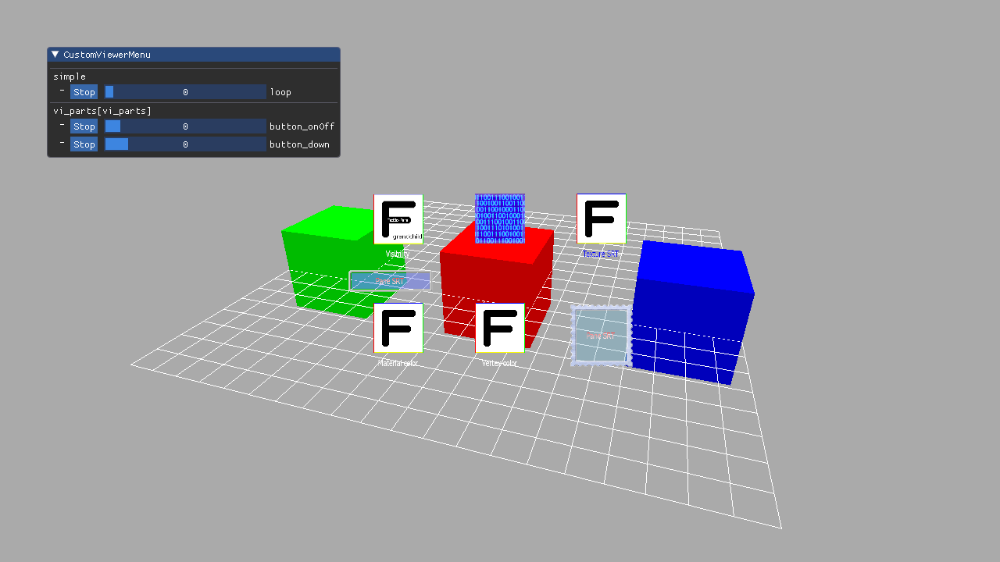

This sample program shows how to use the viewer library (nn::ui2d::viewer).

Overview
This documentation describes the Ui2dViewerSimple program.
File Structure
This sample program is located in Samples/Sources/Applications/Ui2dViewerSimple/ .
Required Environment
Nothing specific.
How to Use
A mouse or touch panel can be used to operate the viewer menu and control animation frame playback.
Important Information
Because the viewer library uses the host communication development feature, it is not available in Release builds.
Execution Procedure
- Execute the sample. A grid and a cube of three colors are displayed on the screen, and the program waits for the transfer from LayoutEditor.
- Start LayoutEditor and TargetManager.
- From the menu in LayoutEditor, turn off Auto Launch Standard PC Viewer.
- In LayoutEditor, open the data (for example, in
Samples/Sources/Resources/Ui2d) and transfer the data to the viewer (F5 or CTRL+F5).
- The layout is displayed.
- It is displayed overlapping the tricolored cube.
- The viewer menu for controlling the animation playing the transferred layout is displayed.
- In the PC version, you can use a mouse to operate the viewer menu. In the development hardware version, you can use
InputDirector.exe(/Tools/Hid/InputDirector) to operate the viewer menu.
Description
This sample demo shows how to use the viewer library (nn::ui2d::viewer).
Embed the viewer library in the game to create a custom viewer to display the data sent from LayoutEditor over the game.
The custom viewer has the following advantages.
- Preview is possible in a state close to the final display result, allowing for more precise adjustments. In a state with the background accurately rendered, the framebuffer loaded by the capture pane can also load the actual rendering result.
- Can preview using control definitions extended independently in the game. You can check the preview including independently extended control behavior (use
SetControlCreator() to insert the extended class in the viewer).
- Can preview the state with official text inserted in a layout that has provisional text. Use
SetTextSearcher() to insert the TextSearcher implemented by the game in the viewer.
- Can easily add an independent debug menu for preview. For example, it is possible to add a feature for playing back multiple animations (shown as an example in this demo).
Overall Sample Flow
- Initialize the game.
- The game main loop.
- Viewer update processing.
- Initialize the game.
Viewer Update Process Flow
Objects marked with the star are callbacks called by a user-customized process from the ui2d library.
- Wait for a communication command (waits for the preview to be transferred from the LayoutEditor of the host PC).
- Receive the communication command.
- Finalize the resources (
Viewer::FinalizeResources()).
ResourceAccessor::Detach()ResourceAccessor::Finalize()ViewerUnload_()
- Reload preprocessing (
PreReloadLayoutDataCallback_).
- Load files
ViewerLoad_().
- Attach to the resource accessor.
- Construct the layout.
DoCretateLayout_()Layout::Build()- Initialize (initialize the animation (
Viewer::CreateAnimators_())).
- Reload postprocessing (
PostReloadLayoutDataCallback_).
- Return to waiting for a communication command.